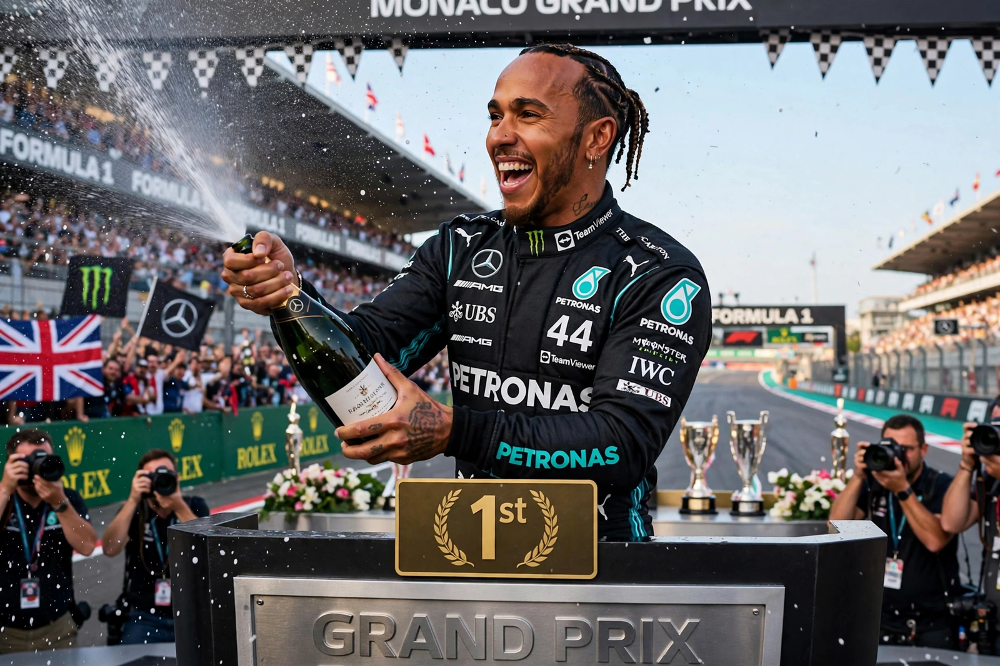

Lewis Hamilton

| Born | 7 January 1985, Stevenage, England |
|---|---|
| Nationality | British |
| Occupation | Formula One racing driver |
| World Championships | 7 (2008, 2014, 2015, 2017, 2018, 2019, 2020) |
| Teams | McLaren (2007–2012), Mercedes (2013–2024), Ferrari (2025–) |
Sir Lewis Carl Davidson Hamilton (born 7 January 1985) is a British racing driver competing in Formula One. He has won a joint-record seven World Drivers' Championship titles (tied with Michael Schumacher) and holds the records for the most wins, pole positions and podium finishes in Formula One history.
Career
Hamilton began karting at age eight and was signed to McLaren's young driver programme at 13 after famously telling team boss Ron Dennis that he wanted to drive for him one day. He won the GP2 Series in 2006 and made his Formula One debut with McLaren in 2007, finishing runner-up by a single point in his rookie season. In 2008 he became, at the time, the youngest world champion, clinching the title at the final corner of the final race in Brazil.
In 2013 he moved to Mercedes, a decision widely questioned at the time. With the advent of the turbo-hybrid era in 2014, Hamilton and Mercedes dominated: he won six further titles between 2014 and 2020, and surpassed Schumacher's record of 91 Grand Prix wins, reaching 105 wins. His 2021 title fight with Max Verstappen ended controversially at the Abu Dhabi Grand Prix. In February 2024 Hamilton announced a shock move to Ferrari for the 2025 season, ending his record-breaking partnership with Mercedes.
Personal life and activism
Hamilton was appointed a Knight Bachelor in the 2021 New Year Honours. He is Formula One's first Black driver and a prominent campaigner for diversity in motorsport, environmental causes and animal rights, and follows a vegan lifestyle.